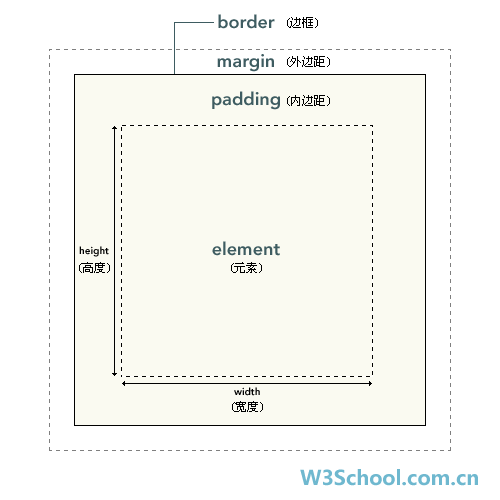
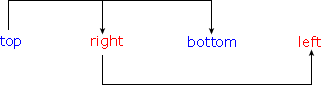

原文连接:https://www.cnblogs.com/wangyuyang1016/p/11442311.html
盒子模型：（重点）
- 盒子模型（CSS框模型）规定了元素框处理元素内容、内边距、边框、外边框等样式

记住上面这一张图！一定要记住！一定！一定！
内边距、边框和外边距是可选参数属性，默认值：0 ；很多元素由用户代理样式表设置外边距和边框，通过将元素的 margin外边距和padding内边距设置为 0 来覆盖这些浏览器样式
在CSS中，width和height指的是内容区域的宽度和高度；增加内边距、边框和外边距不会影响内容区域的尺寸控件，但是会增加元素框的总尺寸；

#box {
width: 70px;
padding: 5px;
margin: 10px;
}内边距：
元素的内边距在边框和内容元素区之间。
padding属性：定义元素边框于元素内容之间的空白区域
padding接受 长度值、百分比值，但不允许负数
单边内边距属性：
- padding-top：上内边距
- padding-right：右内边距
- padding-bottom：下内边距
- padding-left：左内边距
h1 {
padding-top:10px;
padding-right:20px;
padding-bottom:10px;
padding-left:20px;
}当然，css也支持内边距一起设计内边距
h1 {
padding:10px 20px 10px 20px;<!-- 上右下左顺序 -->
}边框：
- 元素的边框（border）是元素内容与内边距的一条或多条线
边框与背景：
边框绘制在 元素的背景 之上！
边框样式：
border-style属性： 定义10个不同的样式
none 定义无边框。 hidden 与 "none" 相同。不过应用于表时除外，对于表，hidden 用于解决边框冲突。 dotted 定义点状边框。在大多数浏览器中呈现为实线。 dashed 定义虚线。在大多数浏览器中呈现为实线。 solid 定义实线。 double 定义双线。双线的宽度等于 border-width 的值。 groove 定义 3D 凹槽边框。其效果取决于 border-color 的值。 ridge 定义 3D 垄状边框。其效果取决于 border-color 的值。 inset 定义 3D inset 边框。其效果取决于 border-color 的值。 outset 定义 3D outset 边框。其效果取决于 border-color 的值。 inherit 规定应该从父元素继承边框样式。
如果定义无边框，就需要设置样式为：none或者outset
- 定义单边边框样式：
- border-top-style：上
- border-right-style：右
- border-bottem-style：下
- border-left-style：左
边框宽度：
- border-width属性：定义边框的宽度
- 指定长度之：px / em
- 关键字：thin、medium（默认）、thick
- 定义单边宽度（方法雷同）
边框颜色：
- border-color属性：定义边框的颜色
- 定义单边颜色（方法雷同）
总结：
| 属性 | 描述 |
|---|---|
| border | 简写属性，用于把针对四个边的属性设置在一个声明。 |
| border-style | 用于设置元素所有边框的样式，或者单独地为各边设置边框样式。 |
| border-width | 简写属性，用于为元素的所有边框设置宽度，或者单独地为各边边框设置宽度。 |
| border-color | 简写属性，设置元素的所有边框中可见部分的颜色，或为 4 个边分别设置颜色。 |
| border-bottom | 简写属性，用于把下边框的所有属性设置到一个声明中。 |
| border-bottom-color | 设置元素的下边框的颜色。 |
| border-bottom-style | 设置元素的下边框的样式。 |
| border-bottom-width | 设置元素的下边框的宽度。 |
| border-left | 简写属性，用于把左边框的所有属性设置到一个声明中。 |
| border-left-color | 设置元素的左边框的颜色。 |
| border-left-style | 设置元素的左边框的样式。 |
| border-left-width | 设置元素的左边框的宽度。 |
| border-right | 简写属性，用于把右边框的所有属性设置到一个声明中。 |
| border-right-color | 设置元素的右边框的颜色。 |
| border-right-style | 设置元素的右边框的样式。 |
| border-right-width | 设置元素的右边框的宽度。 |
| border-top | 简写属性，用于把上边框的所有属性设置到一个声明中。 |
| border-top-color | 设置元素的上边框的颜色。 |
| border-top-style | 设置元素的上边框的样式。 |
| border-top-width | 设置元素的上边框的宽度。 |
外边距：
- margin属性：设置外边距
值复制：
p {margin: 0.5em 1em 0.5em 1em;}
等价于：
p {margin: 0.5em 1em;}如果缺少左外边距，则使用右外边距的值；以此类推

单边外边距：
- margin-top:
- margin-right:
- margin-bottom:
- margin-left:
外边距合并：
当两个垂直外边距相遇是，形成一个外边距
合并后的外边距的高度等于两个发生合并的外边的最大者

当一个元素包含另一个元素中时，它们的上/下外边距会发生合并：


CSS 定位：
- CSS定位，属于允许对元素进行定位
定位：
定位和浮动：
CSS为定位和浮动提供了一些属性，利用属性可以建立列式布局，将布局的一部分重叠。
一切皆为框
div , h1 , p等元素都属于块级元素。
定位机制：
CSS基本定位机制：普通流，浮动和绝对定位
除非专门单独定义，否则所有框都是默认在普通流中定位
块级框从上到下一个接一个排列，框之间的垂直距离是由框的垂直外边距计算出来的。
行内框在一行内的水平布置，使用水平内边距、边框、外边距来调整之间的间距，但是，垂直内边距、边框和外边距不影响行内框的高度，由一行形成的水平框：行框（Line Box），行框的高度总是容纳包含的所有行内框，但是可以通过设置行高（框的高度）
position属性：
- position属性：可以选择4种不同类型的定位
- static：正常生成框体，块级元素框会是一个矩形框，作为文本流的一部分，行内元素会创建一个或多个行框
- relative：元素框偏移某个距离，元素保存其定位前的形状
- absolute：元素框从文档流完全删除，相对于其包含块定位
- fixed：元素框表现类似将position设置为absolute，不过其包含块是视窗本身
- CSS 定位属性允许你对元素进行定位。
| 属性 | 描述 |
|---|---|
| position | 把元素放置到一个静态的、相对的、绝对的、或固定的位置中。 |
| top | 定义了一个定位元素的上外边距边界与其包含块上边界之间的偏移。 |
| right | 定义了定位元素右外边距边界与其包含块右边界之间的偏移。 |
| bottom | 定义了定位元素下外边距边界与其包含块下边界之间的偏移。 |
| left | 定义了定位元素左外边距边界与其包含块左边界之间的偏移。 |
| overflow | 设置当元素的内容溢出其区域时发生的事情。 |
| clip | 设置元素的形状。元素被剪入这个形状之中，然后显示出来。 |
| vertical-align | 设置元素的垂直对齐方式。 |
| z-index | 设置元素的堆叠顺序。 |
相对定位：relative
相对定位：对一个元素进行相对定位，通过设置垂直或水平位置，让元素相对于起点进行移动
#box {
position: relative;
left: 30px;
top: 20px;
}
如上；将top设置为20px表示框从上往下（距离上）偏移20px，将left设置为30px表示框从左往右（距离左）便宜30px。
绝对定位：absolute
绝对定位：通过设置垂直或水平位置，让元素绝对定位（以视窗左上角做起点）
#box {
position: absolute;
left: 30px;
top: 20px;
}
浮动定位：float
浮动的框可以向左/向右移动，知道外边接触到另一个框的边框停止
由于浮动框不在文档的普通流中，所以文档的普通流中的块表现的向浮动窗不存在一样。
浮动：

框1向右浮动，直到框1接触到它所在框的边缘时候才停止。
框1从右侧向左侧浮动，由于不占用文档空间，所以框1会覆盖框2

如果所有框都向左移动，那么框1接触到元素框的边框停止，另外两个框接触到前一个框的边框，停止浮动。

如果元素框大小无法接受三个浮动框的大小，就会向下移动……
float属性：
- float属性实现元素的浮动
行框和清理：
浮动框旁边的行框被缩短，从而给浮动框留出空间，行框围绕浮动框
因此，创建浮动框可以使文本围绕图像：

clear属性：
| 值 | 描述 |
|---|---|
| left | 在左侧不允许浮动元素。 |
| right | 在右侧不允许浮动元素。 |
| both | 在左右两侧均不允许浮动元素。 |
| none | 默认值。允许浮动元素出现在两侧。 |
| inherit | 规定应该从父元素继承 clear 属性的值。 |